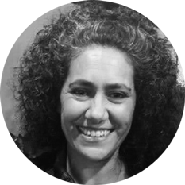

La Escuela después de la escuela
Foto 33. Clic.
Es un momento, una ráfaga, un ya pasó. Todo representa cansancio, agotamiento, un día largo al que todavía le quedan dos horas para terminar. Dos horas más en la escuela, dos horas que no son pagas. Empieza al caer el sol y termina cuando ya es de noche. ¿Por qué una docente seguiría estando en la escuela a esta hora, en estas condiciones?
Nadie se queda después del trabajo si no fuera que está a la búsqueda de algo. Algo que ese espacio está generando, habilitando. Es tanto una necesidad como un deseo. O sea, es una pulsión: saber más. Desarrollar esa “curiosidad por las cosas del mundo”.
Quien se queda, se queda porque está a la pesca, anda detrás de una cacería furtiva.
Quién sabe… quizás con suerte encuentre algo que no estaba buscando.
Foto 29. Clic.
“Nunca pensé que podía hablar tanto de cuentos”.
Alguien tiró una red y pescó algo que no sabía que iba a pescar.
“Me es difícil venir, pero estaré aquí la semana que viene”, porque algo se mueve dentro y se dan cuenta de que en la discusión hay más de lo previsto.
No había que hacer trucos de magia, probablemente sí varios tours de force para quedarse, para no dormirse, para dejar de inventar excusas para no ir y sostener el diálogo, seguir leyendo y, en el camino, aprender (y aprehender) que les gusta estudiar. Que, a pesar de estar rodeadas y rodeados de textos todo el tiempo, cuando leemos y hablamos sobre lo que leímos nuestras miradas crecen. Hablar sobre lo que leemos nos hace mirar más lejos.
¿Quién mejor que un docente para sentir el hartazgo de la lectura y la escritura?
¿Quien mejor que un docente para descubrir que la lectura, la escritura y la conversación con otros puede hacer que nos volvamos a enamorar de una profesión que no siempre es tan amable con nosotros mismos?
¿Quién mejor que un directivo para encender el deseo de volver a estudiar? Son las ganas de hablar con colegas desde otro lugar, porque no es la charla de la sala de maestros. Es la charla tamizada por las palabras de otros, por la lectura que ayuda a ampliar imaginarios, que pone en nuestras bocas palabras que no conocíamos, que nos hace armar conexiones con experiencias y otras lecturas. Una escritora, un semiólogo, un maestro ponen en palabras eso que pasa día a día en las aulas y que no sabíamos cómo nombrar. Escritoras y escritores que nos suman a sus reflexiones y, porque pensamos con (y contra) ellos, hacemos comunidad.
Eso es (o debería ser) una escuela cada día, todos los días.
Foto 10. Clic.
Resaltador, papelitos de colores, escritos al margen, apuntes.
Dicen que aprender es un proceso cognitivo, que no se puede ver, pero cuando alguien “lee para aprender” salta a la vista lo que está haciendo. Quien lee resalta palabras como Hansel y Gretel, siguiendo las migas que alguien dejó en el papel. Marcar un texto es la necesidad de dejar a la vista el otro camino de la lectura, lo que dicen los espacios blancos entre las letras negras.
Habitar (y habilitar) la escuela como un espacio de estudio también –pero sobre todo– para quienes enseñan es un gesto de amor, es una invitación, un convite, un invitar a otras y otros a ser parte de una celebración íntima.
Hay mucho que hacer para leer comprensivamente (me pregunto si al decir esto apelamos al raciocinio o a la empatía; quizás un poco a ambos), hay que reponer información, hay que vincular ideas, sostener en la memoria aquello que se dijo dos páginas atrás y ponerlo en contexto con lo que viene tres páginas después, hay que detenerse en aquello que suena raro o desconocido y tratar de darle sentido en el todo, por no nombrar siquiera el esfuerzo de sostener la mirada y fijar la atención para que no se vaya volando detrás del “todavía no cargué las notas” o “tengo que pasar por el súper”.
Leer es una cacería furtiva y también es un trabajo que nadie emprendería si no fuera por amor a…. (llene aquí quien lee con lo que le parezca: saber, estudiantes, trabajo, curiosidad son algunas de las cosas que se nos vienen a la cabeza).
Foto 7. Clic.
Apenas un instante: una mesa, papeles, voces que se cruzan. Un momento suspendido en el que algo se está tramando, aunque no se vea del todo. La foto captura una reunión, sí, ¿y qué más? ¿Qué se entrelaza en esas palabras, en esos vínculos, en ese encuentro?
Quizás hay un deseo por comprender, por afinar los saberes, por hilvanar mundos posibles.
Clic.
En el borde de la imagen, una señal más. Un cochecito, quieto, casi inadvertido. Como si recordara que en la escuela, como en la vida, siempre se tejen varias capas a la vez: la de los pensamientos, la de las tareas, la de las vidas que acompañan y se cuelan sin pedir permiso.
Quien se queda en la escuela “después de hora”, se queda porque quizás intuye que en estas tramas –las visibles y las silenciosas– puede aparecer algo inesperado.
Foto 23. Clic.
La escuela aparece como un espacio donde lo escrito no es solo contenido: es una trama en movimiento. Mientras las manos anotan, subrayan o sostienen, los textos se van trenzando con las voces, con las miradas, con los cuerpos que participan.
La imagen habla de tramas vinculares que, como las tramas textuales, se construyen y reconstruyen constantemente, entre varias voces: ideas que se discuten, relatos que se comparten, preguntas que se escriben antes de animarse a ser dichas. Incluso los objetos –un cuaderno, un juguete para bebés, un cartel que invita a “compartir cuentos”– se vuelven parte de la misma escritura colectiva: leer con otros, estudiar con otros, conversar y compartir con otros.
Clic.
Lo que se (en)trama es una red de sentidos que se va tejiendo: palabra por palabra, línea por línea, gesto por gesto. La foto captura ese instante –íntimo– en el que la escuela (se) piensa, redacta, conversa. Un tejido que mezcla saberes y palabras, en el que la educación aparece como una trama que se escribe entre muchos.
Foto 30. Clic.
Lo que callamos las maestras.
A las maestras nos duelen muchas cosas. Uno podría pensar que duele la espalda de tanto estar de pie mientras trabajamos: las escoliosis hacen de las suyas en los planteles docentes, nadie lo puede negar a eso; pero hay cosas que duelen más. ¿Será que duele mucho la cabeza? Claro, a causa del bullicio, de gritos y de risas que se suceden incansablemente en las aulas. Sí. Sin embargo, hay cosas que duelen más. Duelen tantas cosas en la escuela… como en la vida misma. Duelen las injusticias, la escasez simbólica, material. Duele la reproducción de las desigualdades. Duele ser consciente de todo esto.
¿Y entonces? ¿Por qué seguimos de pie, a pesar de las escoliosis y los dolores del ciático?¿Por qué seguimos poniendo el cuerpo y la cabeza las maestras? Porque tenemos un poder, un don del que no muchos saben y que se esconde en nuestras gafas: podemos ver el vaso medio lleno. Creemos en que nuestro granito de arena suma. Elegimos creer que contribuimos a que los futuros sean mejores, que nuestro trabajo es importante. Estamos convencidas de que la educación cambia vidas, da oportunidades a las personas: abre las mentes, potencia habilidades.
Por eso, a pesar de que tantas cosas duelen y las sufrimos muchas veces en silencio, seguimos apostando, seguimos alegrándonos con las risas, acompañando y conteniendo en las tristezas y, por sobre todas las cosas, seguimos enseñando con el hermoso convencimiento de que vale la pena enseñar, calzarse las zapatillas, la mochila y los libros y volver a la escuela semana tras semana.
La escuela siendo escuela.
Clic.
Clic.
Clic.
⥈

Mariana Ocampo es integrante del Departamento de Lengua y Literatura del ISEP. Es profesora en Lengua Castellana, maestranda en Didáctica de la Lengua y la Literatura (UNR) y doctora en Ciencias de la Educación (UNCuyo). Se desempeña como profesora adjunta de las cátedras Didáctica de la Lengua y la Literatura, Adquisición y Desarrollo del Lenguaje y Seminario de Psicolingüística del Profesorado en Lengua y Literatura de la Universidad Nacional de Villa María. Da clases en un instituto de formación docente en el área de Didáctica de la Lengua y la Literatura. Es investigadora.
Daiana Barone integra el Departamento de Lengua y Literatura del ISEP. Es profesora y licenciada en Letras Modernas. Se desempeña como docente de nivel Secundario y en los talleres de Oralidad, Lectura y Escritura de los profesorados de nivel Inicial tanto de la Escuela Normal Superior Alejandro Carbó como de la Agustín Garzón Agulla, en la ciudad de Córdoba.
Valeria Daveloza es coordinadora del Departamento de Lengua y Literatura del ISEP. Estudió Letras Modernas y se desempeña como docente en las cátedras de Lengua y su Didáctica de los profesorados de los niveles Inicial y Primario en la Universidad Nacional de la Pampa, donde dirige un equipo de investigación sobre alfabetización inicial y avanzada. Ha escrito libros de literatura infantil y participado en diversas antologías.